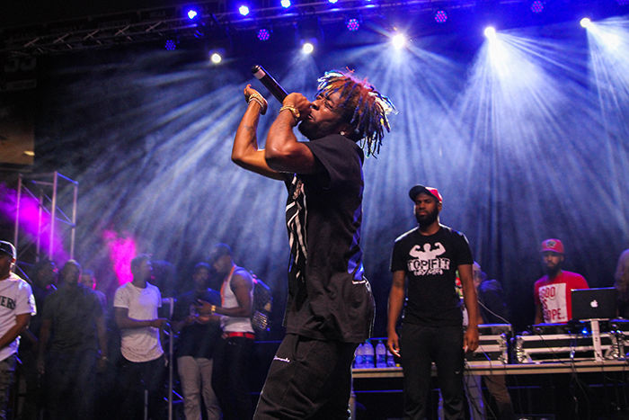

*Justin Bogart*
Music
Music is a big part of my life. I listen to music every chance I can get because I feel like I can relate to the messages in each song I listen too. I listen to mostly hip hop/rap but also will listen to some rock and country at times. Normally, I like to listen to music through a speaker and with other people. I invest a lot into music by constantly trying to find new songs to listen too everyday.
The biggest artists I listen too would include Kendrick Lamar, Migos, Lil Uzi Vert, Post Malone and Travis Scott. I also listen to a lot of other artists but these are the ones that I like to listen to every single day. Migos and Travis Scott bring a good vibe to trap music while Lil Uzi Vert brings his own unique style of music. I went to see a concert for Lil Uzi Vert in Boston and it had the best atmosphere I've ever seen. Travis Scott is my favorite artist because of his production he makes on every album he puts out. The lyrics are pretty good for the most part but the way he flows his music makes me love what he does
Favorite Songs from Artists
For Kendrick Lamar, my favorite song of his would-be m.A.A.d city (ft. MC Eiht). My favorite Lil Uzi Vert song is P's and Q's which is one of my favorite songs in general. For Post Malone, I think that Too Young and White Iverson. My favorite Travis Scott songs would be A-Team, through the late night and Butterfly Effect. Finally, my favorite Migos song includes Travis Scott and that’s called Kelly Price.
Conclusion
In general I love listening to music and it’s a big part of my everyday life. I listen to music when I go to class, when I'm in the car, sitting in my dorm room and even as a write this. This is something very special to me and I love to do it everyday.
Lil Uzi Vert

Home Page